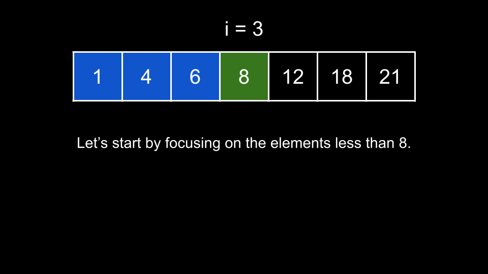
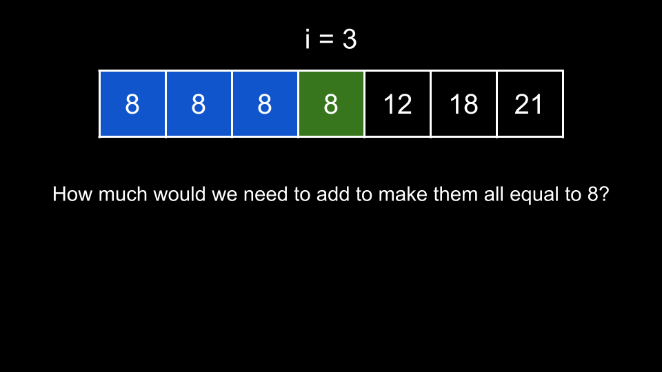
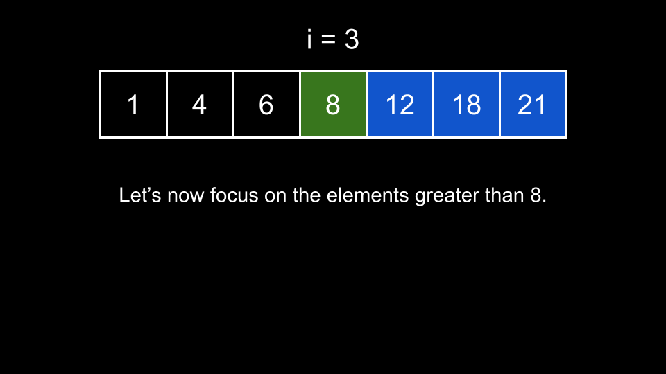
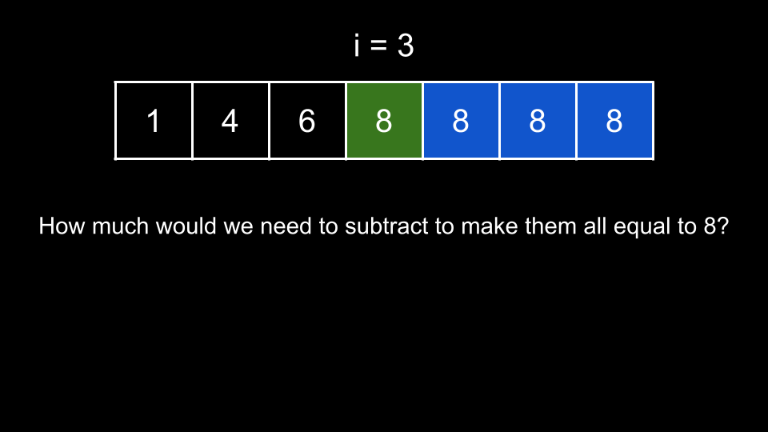

Intuition
Because the input is given sorted, let's try to split the problem into two parts. For a given num at
index i, the answer for this index is the sum of:
num and all numbers less than num.num and all numbers greater than num.As nums is sorted, we can focus on all indices less than i for the first part and all
indices greater than i for the second part. Let's start with the first part with the following example.

The sum of differences is equivalent to the sum we would have to add to the numbers to make them all equal to
8.

If we made all the numbers equal to 8, they would have a sum equal to 8 times the count of
numbers leftCount. In this specific example, they would have a sum of 3 * 8 = 24. In
general, for an index i, there are i elements less than nums[i], so we have
leftCount = i and these numbers would have a sum of leftCount * nums[i].
Their current sum is leftSum = 1 + 4 + 6 = 11. Thus, we can find the sum of absolute differences for
these elements as leftTotal = 24 - 11 = 13. In general, we have leftTotal = leftCount * nums[i] -
leftSum. This makes sense as it is the difference between what the elements would be if they were all
equal to nums[i] minus what they currently are, which is precisely what the problem is asking for.
What about the elements on the right?

We can make use of the same idea - how much would we need to subtract from the numbers on the right
to make them all equal to 8? Note we subtract here instead of adding because the numbers on the right
are greater.

How many elements are on the right? In this example, there are 3, so they would have a sum of 8 *
3 = 24. In general, for an index i, there are rightCount = n - 1 - i elements on
its right, and they would have a sum of rightCount * nums[i] if we reduced them all.
In our example, they currently have a sum of rightSum = 12 + 18 + 21 = 51. Thus, the sum of absolute
differences is 51 - 24 = 27. In general, we can find the sum of absolute differences as rightTotal
= rightSum - rightCount * nums[i].
Now, we know how to find the answer for each index i. But how do we find leftSum and rightSum?
We can make use of prefix sums to find the sum of any subarray in O(1)O(1).
We start by building a prefix sum array prefix, where prefix[i] represents the sum of all
elements up to and including index i. Then, we can calculate leftSum = prefix[i] - nums[i]
and rightSum = prefix[n - 1] - prefix[i]. Note that this is simply how we are implementing the prefix
sum in this article, and you may implement it in whatever way you are most comfortable. The important thing is that
we can quickly calculate leftSum and rightSum.
Once we have prefix, we iterate over each index i and use the process we described above to
find leftTotal and rightTotal. Then, the answer for index i is simply leftTotal
+ rightTotal.
Algorithm
Let n be the length of nums.
prefix sum of nums.ans.i over the indices of nums:
leftSum using prefix.rightSum using prefix.leftCount = i.rightCount = n - 1 - i.leftTotal = leftCount * nums[i] - leftSum.rightTotal = rightSum - rightCount * nums[i].leftTotal + rightTotal to ans.ans.Implementation
Java
class Solution {
public int[] getSumAbsoluteDifferences(int[] nums) {
int n = nums.length;
int[] prefix = new int[n];
prefix[0] = nums[0];
for (int i = 1; i < n; i++) {
prefix[i] = prefix[i - 1] + nums[i];
}
int[] ans = new int[n];
for (int i = 0; i < n; i++) {
int leftSum = prefix[i] - nums[i];
int rightSum = prefix[n - 1] - prefix[i];
int leftCount = i;
int rightCount = n - 1 - i;
int leftTotal = leftCount * nums[i] - leftSum;
int rightTotal = rightSum - rightCount * nums[i];
ans[i] = leftTotal + rightTotal;
}
return ans;
}
}
C++
class Solution {
public:
vector getSumAbsoluteDifferences(vector& nums) {
int n = nums.size();
vector prefix = {nums[0]};
for (int i = 1; i < n; i++) {
prefix.push_back(prefix[i - 1] + nums[i]);
}
vector ans;
for (int i = 0; i < n; i++) {
int leftSum = prefix[i] - nums[i];
int rightSum = prefix[n - 1] - prefix[i];
int leftCount = i;
int rightCount = n - 1 - i;
int leftTotal = leftCount * nums[i] - leftSum;
int rightTotal = rightSum - rightCount * nums[i];
ans.push_back(leftTotal + rightTotal);
}
return ans;
}
};
Python3
class Solution:
def getSumAbsoluteDifferences(self, nums: List[int]) -> List[int]:
n = len(nums)
prefix = [nums[0]]
for i in range(1, n):
prefix.append(prefix[-1] + nums[i])
ans = []
for i in range(len(nums)):
left_sum = prefix[i] - nums[i]
right_sum = prefix[-1] - prefix[i]
left_count = i
right_count = n - 1 - i
left_total = left_count * nums[i] - left_sum
right_total = right_sum - right_count * nums[i]
ans.append(left_total + right_total)
return ans
Complexity Analysis
Given nn
as the length of nums,
Time complexity: O(n)O(n)
Creating prefix requires O(n)O(n)
time. Then, we iterate over nums, performing O(1)O(1) work at each
iteration. Thus, we require O(n)O(n) time.
Space complexity: O(n)O(n)
prefix has a length of nn.
Intuition
In fact, we do not need the prefix array. As leftSum for any adjacent indices like
i and i + 1 only differ by one element, we can calculate leftSum on the fly
by initializing it to 0 and simply adding each number we iterate over to it. If we know
leftSum, then we can also deduce what rightSum is by taking the totalSum of
the array and subtracting leftSum and nums[i] from it. This avoids the need to build a
prefix sum array and achieves the same result.
Thus, we will start by finding the totalSum, and then use that to calculate rightSum while
calculating leftSum on the fly. Everything else remains the same.
Algorithm
Let n be the length of nums.
totalSum as the sum of nums, leftSum = 0, and the answer list
ans.
i over the indices of nums:
rightSum = totalSum - leftSum - nums[i].leftCount = i.rightCount = n - 1 - i.leftTotal = leftCount * nums[i] - leftSum.rightTotal = rightSum - rightCount * nums[i].leftTotal + rightTotal to ans.nums[i] to leftSum.ans.Implementation
Java
class Solution {
public int[] getSumAbsoluteDifferences(int[] nums) {
int n = nums.length;
int totalSum = 0;
for (int num : nums) {
totalSum += num;
}
int leftSum = 0;
int[] ans = new int[n];
for (int i = 0; i < n; i++) {
int rightSum = totalSum - leftSum - nums[i];
int leftCount = i;
int rightCount = n - 1 - i;
int leftTotal = leftCount * nums[i] - leftSum;
int rightTotal = rightSum - rightCount * nums[i];
ans[i] = leftTotal + rightTotal;
leftSum += nums[i];
}
return ans;
}
}
C++
class Solution {
public:
vector getSumAbsoluteDifferences(vector& nums) {
int n = nums.size();
int totalSum = accumulate(nums.begin(), nums.end(), 0);
int leftSum = 0;
vector ans;
for (int i = 0; i < n; i++) {
int rightSum = totalSum - leftSum - nums[i];
int leftCount = i;
int rightCount = n - 1 - i;
int leftTotal = leftCount * nums[i] - leftSum;
int rightTotal = rightSum - rightCount * nums[i];
ans.push_back(leftTotal + rightTotal);
leftSum += nums[i];
}
return ans;
}
};
Python3
class Solution:
def getSumAbsoluteDifferences(self, nums: List[int]) -> List[int]:
n = len(nums)
total_sum = sum(nums)
left_sum = 0
ans = []
for i in range(len(nums)):
right_sum = total_sum - left_sum - nums[i]
left_count = i
right_count = n - 1 - i
left_total = left_count * nums[i] - left_sum
right_total = right_sum - right_count * nums[i]
ans.append(left_total + right_total)
left_sum += nums[i]
return ans
Complexity Analysis
Given nn
as the length of nums,
Time complexity: O(n)O(n)
Creating totalSum requires O(n)O(n)
time. Then, we iterate over nums, performing O(1)O(1) work at each
iteration. Thus, we require O(n)O(n) time.
Space complexity: O(1)O(1)
We don't count the answer toward the space complexity. Thus, we are only using a few integer variables.